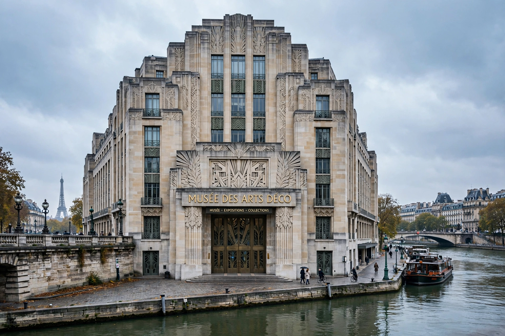

Palais de Tokyo
| Palais de Tokyo | |
|---|---|
| Location | 13 Avenue du Président Wilson, 16th arrondissement, Paris |
| Opened | 1937 (Exposition Internationale) |
| Current use | Contemporary art centre (since 2002) |
| Named for | Former Quai de Tokyo (now Avenue de New-York) |

The Palais de Tokyo is an Art Deco building in the 16th arrondissement of Paris, inaugurated in 1937 for the Exposition Internationale des Arts et Techniques dans la Vie Moderne. It originally housed two museums — the Musée d'Art Moderne de la Ville de Paris in its east wing and a state modern art museum in the west. Today the west wing is one of Europe's largest centres for contemporary art, while the east wing still holds the city's modern art museum.
History
Designed by Jean-Claude Dondel, André Aubert, Paul Viard and Marcel Dastugue, the building is clad in marble with reliefs and statues, including Antoine Bourdelle's monumental La France. The state collections moved to the Centre Pompidou in 1977, leaving the western wing underused for years, serving at times as a cinema school and storage.
Contemporary art centre
In 2002 the Palais de Tokyo reopened in the west wing as a "site of contemporary creation" under directors Nicolas Bourriaud and Jérôme Sans, with raw, deliberately unfinished interiors by architects Lacaton & Vassal. A major expansion in 2012 roughly tripled its exhibition space to about 22,000 m², opened until midnight, embracing emerging and experimental practice, performances and publishing rather than a permanent collection.
See also: Musée d'Art Moderne de Paris, Contemporary art, Paris.